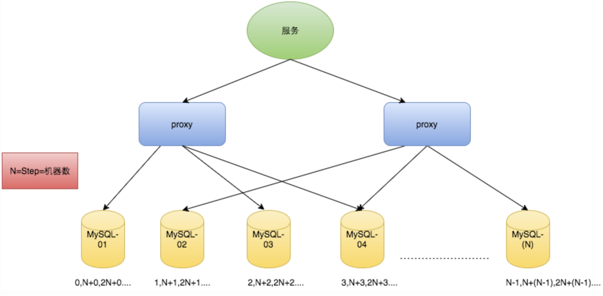
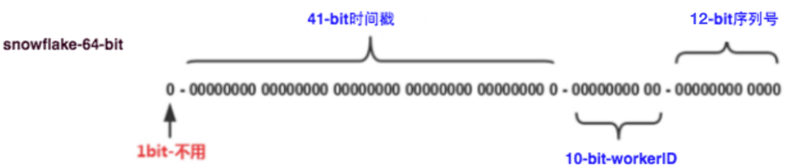
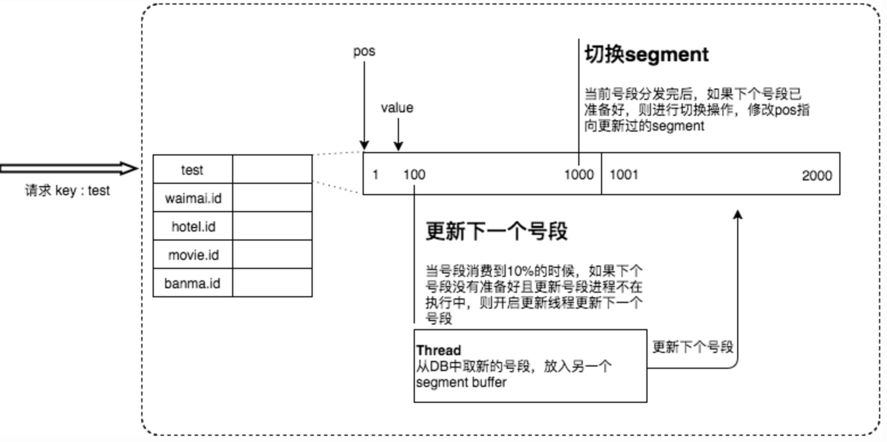
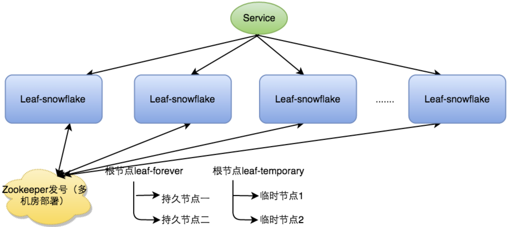
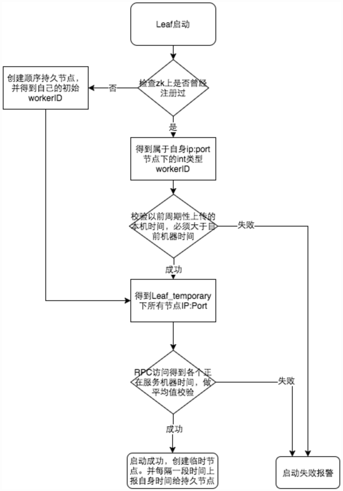
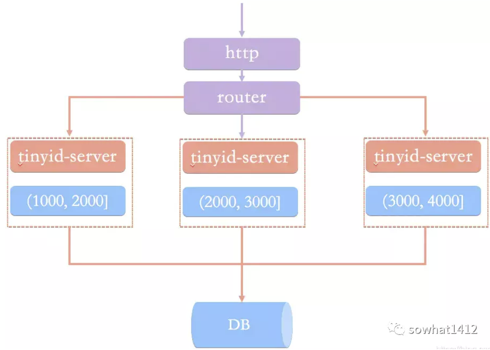

分布式ID生成方案简介
背景
在复杂分布式系统中，往往需要对大量的数据和消息进行唯一标识。尤其现在大型的toc 的互联网公司，业务量大，数据日渐增长，对数据分库分表后需要有一个唯一ID来标识一条数据或消息，数据库的自增ID显然不能满足需求；此时一个能够生成全局唯一ID的系统是非常必要的。概括下来，分布式ID的要求有：
- 全局唯一性：不能出现重复的ID号，既然是唯一标识，这是最基本的要求。
- 趋势递增：在MySQL InnoDB引擎中使用的是聚集索引，由于多数RDBMS使用B+树的数据结构来存储索引数据，在主键的选择上面我们应该尽量使用有序的主键保证写入性能。
- 单调递增：保证下一个ID一定大于上一个ID，例如事务版本号、IM增量消息、排序等特殊需求。
- 信息安全：如果ID是连续的，恶意用户的扒取工作就非常容易做了，直接按照顺序下载指定URL即可；如果是那种订单号就更危险了，可以直接根据订单号知道一天的订单量。所以在一些应用场景下，需要ID无规则、不规则。
上述123对应三类不同的场景，3和4需求还是互斥的，无法使用同一个方案满足。同时， 除了对ID自身的要求，公司内部业务还对ID号生成系统的可用性要求极高， 很多业务都会去依赖id生成系统。
常用方法介绍
UUID
UUID(Universally Unique Identifier)的标准型式包含32个16进制数字，以连字号分为五段，形式为8-4-4-4-12的36个字符，示例：550e8400-e29b-41d4-a716-446655440000，到目前为止业界一共有5种方式生成UUID，详情见IETF发布的UUID规范 A Universally Unique IDentifier (UUID) URN Namespace
优点：
- 性能非常高：本地生成，没有网络消耗。
缺点：
不易于存储：UUID太长， 16字节128位，通常以36长度的字符串表示，很多场景不适用。
信息不安全：基于MAC地址生成UUID的算法可能会造成MAC地址泄露
ID作为主键时在特定的环境会存在一些问题，比如做DB主键的场景下，UUID就非常不适用：
- MySQL官方有明确的建议主键要尽量越短越好[4]，36个字符长度的UUID不符合要求。
All indexes other than the clustered index are known as secondary indexes. In InnoDB, each record in a secondary index contains the primary key columns for the row, as well as the columns specified for the secondary index. InnoDB uses this primary key value to search for the row in the clustered index. If the primary key is long, the secondary indexes use more space, so it is advantageous to have a short primary key.
- 对MySQL索引不利：如果作为数据库主键，在InnoDB引擎下，UUID的无序性可能会引起数据位置频繁变动，严重影响性能。
数据库ID自增
以MySQL举例，利用给字段设置auto_increment_increment和auto_increment_offset来保证ID自增，每次业务使用下列SQL读写MySQL得到ID号。
这种方案的优缺点如下：
优点：
- 非常简单，利用现有数据库系统的功能实现，成本小，有DBA专业维护。
- ID号单调自增，可以实现一些对ID有特殊要求的业务。
缺点：
- 强依赖DB，当DB异常时整个系统不可用，属于致命问题。配置主从复制可以尽可能的增加可用性，但是数据一致性在特殊情况下难以保证。主从切换时的不一致可能会导致重复发号。
- ID发号性能瓶颈限制在单台MySQL的读写性能。
对于MySQL性能问题，可用如下方案解决：在分布式系统中我们可以多部署几台机器，每台机器设置不同的初始值，且步长和机器数相等。比如有两台机器。设置步长step为2，server1的初始值为1（1，3，5，7，9，11…）、server2的初始值为2（2，4，6，8，10…）。为了实现上述方案分别设置两台机器对应的参数，server1从1开始发号，server2从2开始发号，两台机器每次发号之后都递增2。
假设我们要部署N台机器，步长需设置为N，每台的初始值依次为0,1,2…N-1那么整个架构就变成了如下图所示：

这种架构貌似能够满足性能的需求，但有以下几个缺点：
- 系统水平扩展比较困难，比如定义好了步长和机器台数之后，如果要添加机器该怎么做？假设现在只有一台机器发号是1,2,3,4,5（步长是1），这个时候需要扩容机器一台。可以这样做：把第二台机器的初始值设置得比第一台超过很多，比如14（假设在扩容时间之内第一台不可能发到14），同时设置步长为2，那么这台机器下发的号码都是14以后的偶数。然后摘掉第一台，把ID值保留为奇数，比如7，然后修改第一台的步长为2。让它符合我们定义的号段标准，对于这个例子来说就是让第一台以后只能产生奇数。扩容方案看起来复杂吗？貌似还好，现在想象一下如果我们线上有100台机器，这个时候要扩容该怎么做？简直是噩梦。所以系统水平扩展方案复杂难以实现。
- ID没有了单调递增的特性，只能趋势递增，这个缺点对于一般业务需求不是很重要，可以容忍。
- 数据库压力还是很大，每次获取ID都得读写一次数据库，只能靠堆机器来提高性能。
snowflake方案
SnowFlake 算法，是 Twitter 开源的分布式 id 生成算法。其核心思想就是：使用一个 64 bit 的 long 型的数字作为全局唯一 id。在分布式系统中的应用十分广泛，且ID 引入了时间戳，雪花算法基本上保持自增的。

这 64 个 bit 中，其中 1 个 bit 是不用的，然后用其中的 41 bit 作为毫秒数，用 10 bit 作为工作机器 id，12 bit 作为序列号。举例如上图：
- 第一个部分是 1 个 bit：0， 这个是无意义的。因为二进制里第一个 bit 位如果是 1，那么都是负数，但是我们生成的 id 都是正数，所以第一个 bit 统一都是 0。
- 第二个部分是 41 个 bit：表示的是时间戳。单位是毫秒。41 bit 可以表示的数字多达 2^41 - 1，也就是可以标识 2 ^ 41 - 1 个毫秒值，换算成年就是表示
69年的时间。 - 第三个部分是 5 个 bit：表示的是机房 id 5 个 bit 代表机器 id。意思就是最多代表 2 ^ 5 个机房（32 个机房）
- 第四个部分是 5 个 bit：表示的是机器 id。每个机房里可以代表 2 ^ 5 个机器（32 台机器），也可以根据自己公司的实际情况确定。
- 第五个部分是 12 个 bit：表示的序号，就是某个机房某台机器上这一毫秒内同时生成的 id 的序号。12 bit 可以代表的最大正整数是 2 ^ 12 - 1 = 4096，也就是说可以用这个 12 bit 代表的数字来区分同一个毫秒内的 4096 个不同的 id。
总结：简单来说，你的某个服务假设要生成一个全局唯一 id，那么就可以发送一个请求给部署了 SnowFlake 算法的系统，由这个 SnowFlake 算法系统来生成唯一 id。
优点：
- 毫秒数在高位，自增序列在低位，整个ID都是趋势递增的。
- 不依赖数据库等第三方系统，以服务的方式部署，稳定性更高，生成ID的性能也是非常高的。
- 可以根据自身业务特性分配bit位，非常灵活。
缺点：
- 依赖与系统时间的一致性，如果系统时间被回调，或者改变，可能会造成id冲突或者重复。
百度uid-generator
项目GitHub地址：https://github.com/baidu/uid-generator，uid-generator是由百度技术部开发，基于Snowflake算法实现的，与原始的snowflake算法不同在于，uid-generator支持自定义时间戳、工作机器ID和 序列号等各部分的位数，而且uid-generator中采用用户自定义workId的生成策略。
uid-generator需要与数据库配合使用，需要新增一个WORKER_NODE表。当应用启动时会向数据库表中去插入一条数据，插入成功后返回的自增ID就是该机器的workId数据由host，port组成。
1 | +--------+---------------+----------------+----------------+ |
由上图可知，UidGenerator的时间部分只有28位，这就意味着UidGenerator默认只能承受8.5年（2^28-1/86400/365）。当然，根据你业务的需求，UidGenerator可以适当调整delta seconds、worker node id和sequence占用位数。
Leaf-segment数据库方案
该方案是使用数据库的方案上做了如下改变： - 原方案每次获取ID都得读写一次数据库，造成数据库压力大。改为利用proxy server批量获取，每次获取一个segment(step决定大小)号段的值。用完之后再去数据库获取新的号段，可以大大的减轻数据库的压力。 - 各个业务不同的发号需求用biz_tag字段来区分，每个biz-tag的ID获取相互隔离，互不影响。如果以后有性能需求需要对数据库扩容，不需要上述描述的复杂的扩容操作，只需要对biz_tag分库分表就行。
数据库表设计如下：
1 | +-------------+--------------+------+-----+-------------------+-----------------------------+ |
重要字段说明：
biz_tag: 用来区分业务
max_id: 表示该biz_tag目前所被分配的ID号段的最大值
- step: 表示每次分配的号段长度。原来获取ID每次都需要写数据库，现在只需要把step设置得足够大，比如1000。那么只有当1000个号被消耗完了之后才会去重新读写一次数据库。读写数据库的频率从1减小到了1/step
大致架构如下图所示：

上面 test_tag在第一台Leaf机器上是1~1000的号段，当这个号段用完时，会去加载另一个长度为step=1000的号段，假设另外两台号段都没有更新，这个时候第一台机器新加载的号段就应该是3001~4000。同时数据库对应的biz_tag这条数据的max_id会从3000被更新成4000，更新号段的SQL语句如下：
1 | Begin |
这种模式有以下优缺点：
优点：
- 服务可以很方便的线性扩展，性能完全能够支撑大多数业务场景。
- ID号码是趋势递增的8byte的64位数字，满足上述数据库存储的主键要求。
- 容灾性高：服务内部有号段缓存，即使DB宕机，短时间内Leaf仍能正常对外提供服务。
- 可以自定义max_id的大小，非常方便业务从原有的ID方式上迁移过来。
缺点：
- ID号码不够随机，能够泄露发号数量的信息，不太安全。
- 当号段使用完之后还是会hang在更新数据库的I/O上
- DB宕机会造成整个系统不可用。
双buffer 优化
对于第二个缺点，Leaf-segment做了一些优化，简单的说就是：取号段的时机是在号段消耗完的时候进行的，也就意味着号段临界点的ID下发时间取决于下一次从DB取回号段的时间，并且在这期间进来的请求也会因为DB号段没有取回来，导致线程阻塞。如果请求DB的网络和DB的性能稳定，这种情况对系统的影响是不大的，但是假如取DB的时候网络发生抖动，或者DB发生慢查询就会导致整个系统的响应时间变慢。
为此，我们希望DB取号段的过程能够做到无阻塞，不需要在DB取号段的时候阻塞请求线程，即当号段消费到某个点时就异步的把下一个号段加载到内存中。而不需要等到号段用尽的时候才去更新号段。这么做后基本可以解决第二个缺点。详细实现如下图所示：

采用双buffer的方式，服务内部有两个号段缓存区segment。当前号段已下发10%时，如果下一个号段未更新，则另启一个更新线程去更新下一个号段。如果更新失败， 还有重试机制， 可以在号段下发20%时，再次另起一个更新线程去更新下一个号段。按照10%的比例， 可以重试10次。 当前号段全部下发完后，如果下个号段准备好了则切换到下个号段为当前segment接着下发，循环往复。每次请求来临时都会判断下个号段的状态，从而更新此号段，所以偶尔的网络抖动不会影响下个号段的更新。
DB高可用
针对第三个缺点（DB宕机会造成整个系统不可用）， 这个需要通过DB高可用分方式去解决了。一般使用主从模式， 或者集群模式。至于数据一致性的问题， 只要是在非极端情况下，出现的概率也是较低的。这块就不做过多的赘述了。
Leaf-snowflake方案
Leaf-segment方案可以生成趋势递增的ID，同时ID号是可计算的，不适用于订单ID生成场景，比如对在两天中午12点分别下单，通过订单id号相减就能大致计算出公司一天的订单量。
Leaf-snowflake方案完全沿用snowflake方案的bit位设计，即是“1+41+10+12”的方式组装ID号。对于workerID的分配，当服务集群数量较小的情况下，完全可以手动配置。服务规模较大，动手配置成本太高。所以使用Zookeeper持久顺序节点的特性自动对snowflake节点配置wokerID。Leaf-snowflake是按照下面几个步骤启动的：
- 启动Leaf-snowflake服务，连接Zookeeper，在leaf_forever父节点下检查自己是否已经注册过（是否有该顺序子节点）。
- 如果有注册过直接取回自己的workerID（zk顺序节点生成的int类型ID号），启动服务。
- 如果没有注册过，就在该父节点下面创建一个持久顺序节点，创建成功后取回顺序号当做自己的workerID号，启动服务。

- zookeeper弱依赖：除了从zookeeper上拿workerid以外， 也会在本机系统上缓存一个workerId文件， 当zookeeper集群出现问题， 恰好机器出现问题需要重启时，能保证服务能够正常启动。这样做到了对三方组件的弱依赖。
- 时钟回调：具体流程如下：

参见上图整个启动流程图，服务启动时首先检查自己是否写过ZooKeeper leaf_forever节点：
- 若写过，则用自身系统时间与leaf_forever/${self}节点记录时间做比较，若小于leaf_forever/${self}时间则认为机器时间发生了大步长回拨，服务启动失败并报警。
- 若未写过，证明是新服务节点，直接创建持久节点leaf_forever/${self}并写入自身系统时间，接下来综合对比其余Leaf节点的系统时间来判断自身系统时间是否准确，具体做法是取leaf_temporary下的所有临时节点(所有运行中的Leaf-snowflake节点)的服务IP：Port，然后通过RPC请求得到所有节点的系统时间，计算sum(time)/nodeSize。
- 若abs( 系统时间-sum(time)/nodeSize ) < 阈值，认为当前系统时间准确，正常启动服务，同时写临时节点leaf_temporary/${self} 维持session。
- 否则认为本机系统时间发生大步长偏移，启动失败并报警。
- 每隔一段时间(3s)上报自身系统时间写入leaf_forever/${self}。
TinyId
Tinyid由滴滴开发，Github地址：https://github.com/didi/tinyid
Tinyid是一个ID生成器服务，它提供了REST API和Java客户端两种获取方式，如果使用Java客户端获取方式的话，官方宣称能单实例能达到1kw QPS（Over10 million QPSper single instance when using the java client.）
Tinyid原理就是经典的segment模式，和美团的leaf原理几乎一致。原理图如下所示，以同一个bizType为例，每个tinyid-server会分配到不同的segment，例如第一个tinyid-server分配到(1000, 2000]，第二个tinyid-server分配到(2000, 3000]，第3个tinyid-server分配到(3000, 4000]：

以第一个tinyid-server为例，当它的segment用了20%，即设定loadingId为20%的阈值，例如当前id是10000，步长为10000，那么loadingId=12000。那么当请求分布式ID分配到12001时（或者重启后），即超过loadingId，就会异步分配下一个segment(4000, 5000]，以此类推。